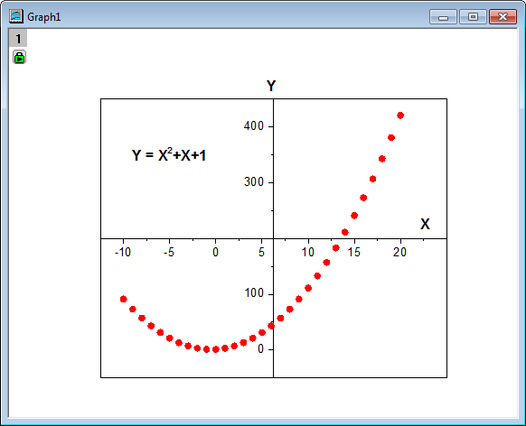
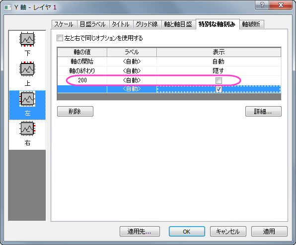
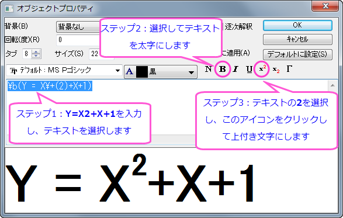

軸中央の散布図
Scatter-Central-Plot
サマリー
軸中央の散布図は、レイヤの中央にXY軸を持つグラフです。このチュートリアルでは、軸中央の散布図を作成し、シンボルおよび軸をカスタマイズします。
- 
必要なOriginのバージョン: Origin 2015 SR0以降
学習する項目
- 値の設定ダイアログを使って、列値をセットする
- 軸中央の散布図を作成する
- シンボルの色と形状を変更する
- 軸目盛ラベルを編集する
ステップ
- 2つの列がある、空のワークシートで操作を開始します。値の設定ダイアログを使用してワークシートに入力する値を設定します。
- 列Aを選択して右クリックし、ショートカットメニューから列値の一律設定：行番号を選択します。再度、列Aを右クリックして、ショートカットメニューから列値の設定を選択し、値の設定ダイアログを開きます。テキストボックスにCol(a) - 11 と入力し、適用ボタンをクリックして、列Aの値を設定します。

 ボタンをクリックして、値の設定ダイアログ内でB列を選択します。ここでは、テキストボックスにA^2 + A + 1と入力します。OKをクリックして列Bにも値を設定します。
ボタンをクリックして、値の設定ダイアログ内でB列を選択します。ここでは、テキストボックスにA^2 + A + 1と入力します。OKをクリックして列Bにも値を設定します。
- 列Bを選択し、メニューから作図：基本の2Dグラフ：散布図（中心軸）と操作します。軸中央の散布図を作成します。

- では、シンボルの色と形状を変更します。散布図をダブルクリックして作図の詳細ダイアログを開き、左側パネルでLayer1の下にあるプロットを選択します。右側パネルのシンボルタブで、プレビューの近くにある三角形ボタンをクリックし、塗りつぶし円のシンボルを選びます。シンボルの色をクリックして、指定色：赤を選びます。OKをクリックして、作図の詳細ダイアログボックスを閉じます。
- ここから軸の編集を行います。Y 軸上でダブルクリックして軸ダイアログを開きます。Y 軸(垂直アイコン)のスケールタブ開き、終了を450 にします。
- 特別な軸刻みタブを開きます。軸の値列で軸の終わりのすぐ下にあるセルに200を入力し、表示列のチェックは外します。以下の図のように設定されるはずです。
- 
- 左側パネルで下アイコンをクリックし、軸の終わり行をクリックして選択します。表示列で選択できるドロップダウンから隠すを選択します。
- OK をクリックして軸の設定を終了します。軸中央の散布図は下図のようになります。

- 凡例を削除し、軸ラベルA をX 、B をYに変更て太字にします。
- X軸の軸ラベル(Xに表示を変えたラベル)を右クリックし、オブジェクトの表示属性をショートカットメニューから選択します。回転(度)を0に設定し、OKをクリックします。XをX軸の最後に移動します。テキストオブジェクトを追加し、Y = X2 + X + 1と入力して、以下の画像の手順で編集してください。
- 
- 最終的なグラフは次のようになります。